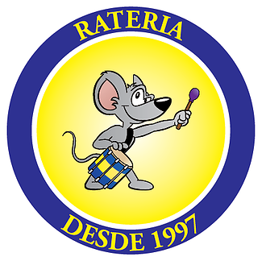

 A Rateria é a bateria dos alunos da Escola Politécnica da Universidade de São Paulo. Em 1997, alguns amigos que estudavam na POLI se reuniram com a idéia de formar uma bateria semelhante às de escola de samba. Esta ideia, de um pequeno grupo de amigos, tornou-se uma das mais renomadas baterias universitárias do país!
A bateria é formada basicamente por alunos da POLI, porém alguns alunos de outras faculdades da USP costumam ensaiar conosco. A Rateria, além de incentivar os times da faculdade e fazer a diferença nas competições esportivas, faz apresentações em festas tradicionais da POLI, casamentos, cervejadas de outras faculdades, eventos beneficentes, maratonas, bailes de 15 anos e muito mais! Sem falar que muitas vezes somos contratados para animar as competições de outras faculdades!
O principal intuito da Rateria é garantir a diversão, nossa e de quem estiver nos recebendo. O nosso objetivo é levar toda nossa alegria e empolgação para quem nos assiste tocando.
Atualmente, contamos com cerca de 60 integrantes e tocamos ritmos que vão do samba ao funk, do axé ao sertanejo e até mesmo Black ou Rock! Tudo isso com os instrumentos musicais característicos de cada música, como cavaco, violão, teclado, guitarra e até trompete! Sempre renovamos nosso repertório, fazendo adaptações de praticamente qualquer ritmo para nossa bateria.
Os ensaios acontecem regularmente às terças e quintas, das 16h40 às 20h. Sabemos que o tempo que dispomos é pouco, portanto a Rateria conta muito com os novos integrantes para manter a renovação e disposição. Mesmo com provas ou milhares de trabalhos para entregar, não perdemos o bom humor e o prazer em tocar.
Se você se identificou conosco, apareça nos ensaios e teremos o maior prazer em recebê-lo!!!